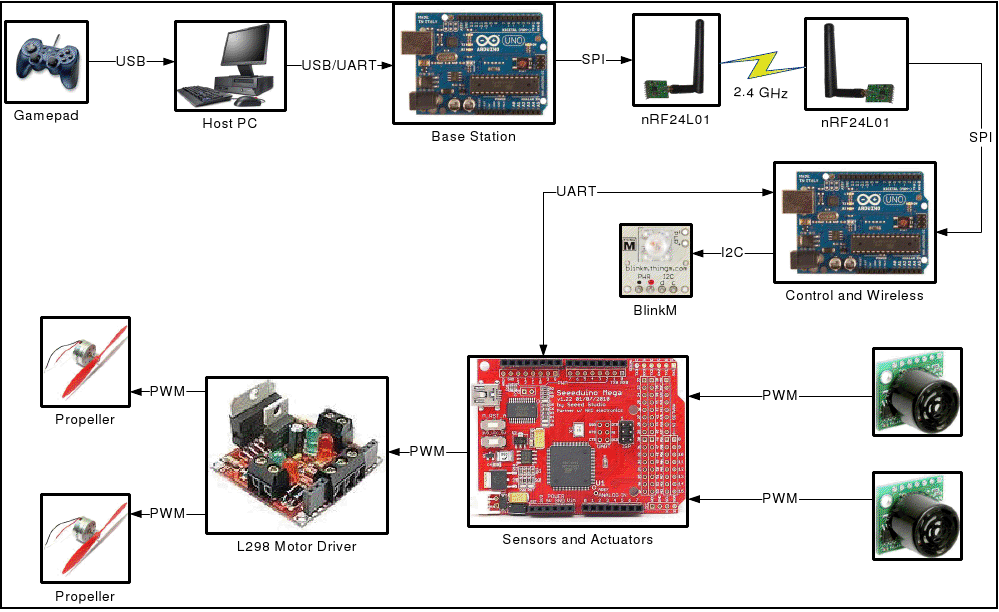

Project 1 - Due February 4th
Project Objectives
In this initial project the main goal for our team is to become familiar with the hardware and software environment that will be required for further project work down the road. We will be using a gamepad, sonar, dc motors, wireless radios and Arduino boards to create a basic control system that will be modified and improved upon for our final project.
Problem Description
Project 1 involves making a rotating platform that will be able to sense and face walls or other obstacles that are placed in front of it. The platform should be able to be controlled by a USB PS2 controller as well as autonomously through the use of sensors and control logic. A remote base station will be constructed using an Arduino UNO board which will send wireless commands to another Arduino UNO board located on the platform. An Arduino Mega clone will also be onboard the platform and will be used to control the sensors and actuators responsible for platform movement.
Chosen Solution
An overview of our system is shown below
{kind=link}
Accomplishments
- Successfully communicated between gamepad, computer, Arduino UNO, and wireless radio
- I2C and SPI communication with BlinkM and radio
- UART full-duplex connection between Arduino Mega and UNO
- High-frequency PWM control of fans
- Responsive, stiff, lightweight platform
- Robust interrupt-driven sonar software
- Emergency cutoff switch for motor commands and high voltage circuitry
Future Steps
- Autonomous control loop
- Sonar noise filter
- Motor "deadzone" mapping to maximize useful range